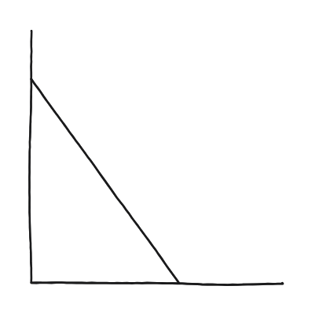
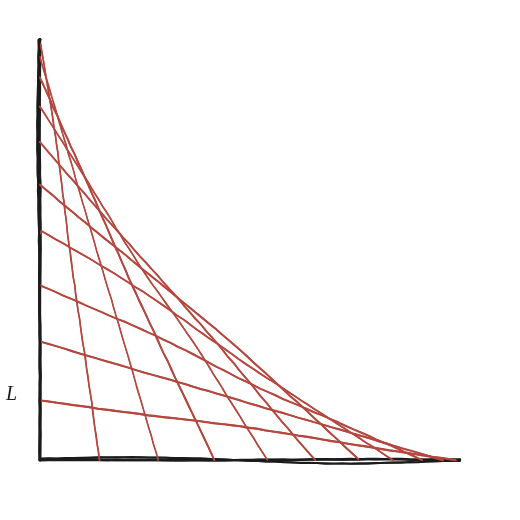

Quin és el perímetre d'una regió formada per un bastó en moviment?

No una posició, totes alhora
L'enunciat no demana el perímetre d'una sola posició del bastó (un simple triangle rectangle): demana el perímetre de la regió que totes les posicions possibles, des de vertical fins a horitzontal, arriben a cobrir en algun moment.
Dibuixar-ne unes quantes, no totes
Marcant el bastó en unes 8 o 10 posicions diferents —els dos extrems sempre sobre la paret i el terra— i mirant la vora de la regió que totes elles, juntes, deixen coberta, apareix un patró clar: cap posició individual del bastó arriba a tocar aquesta vora completa, però totes juntes en marquen el contorn per fora.

Tres trossos, no un de sol
La vora de la regió té tres parts diferents: el tram de paret des de la cantonada fins on arriba el bastó vertical (llargada L, l'alçada del bastó), el tram de terra simètric (també L), i una corba —ni una línia recta ni un arc de cercle— que és tangent a totes les posicions del bastó dibuixades. Aquesta corba es diu astroide: no és cap posició concreta del bastó, és l'envolupant de totes elles juntes.
On s'atura aquesta demostració
Reconèixer i construir l'astroide —saber que hi és, i per què— és el que es pot arribar a fer amb les eines d'aquest quadern. La seva llargada exacta (1,5×L per a un quart d'astroide) es demostra amb càlcul infinitesimal, fora de l'abast d'aquí; no es dedueix aquí, es dona com a dada per completar el perímetre.
El perímetre és L+L+1,5L=3,5L, on els dos primers termes són els trams de paret i terra (fàcils de mesurar) i el tercer és la llargada de l'astroide —la corba envolupant de totes les posicions del bastó—, un resultat que aquí es dona fet, ja que demostrar-lo exigeix càlcul infinitesimal. El que sí que s'aconsegueix amb les eines d'aquest quadern és reconèixer que aquesta vora no és cap línia recta ni arc de cercle, sinó una corba nova.
Comprovació
Amb L=2: perímetre = L+L+1,5L = 3,5L = 7. Mesurant sobre el propi dibuix la llargada aproximada de la corba i sumant-hi els dos trams rectes, el resultat s'hi acosta.